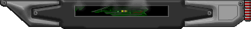
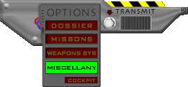

Yes, I have a life beyond the professional focus I have shamelessly promoted. Perhaps thats why I lie so badly when I say this area is updated often with topics of interest other than what I do for a living.
